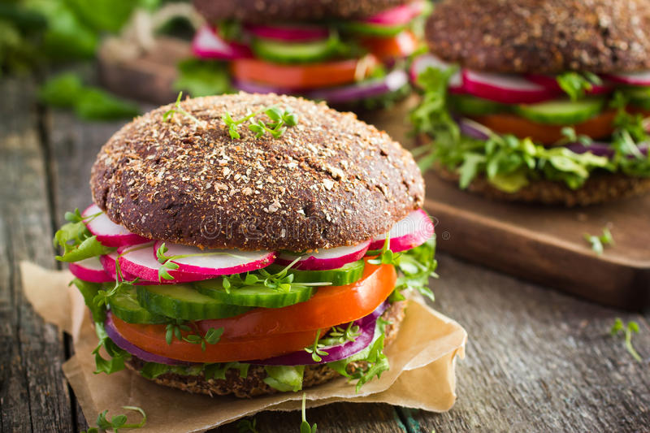

NOODLES
Noodles are a type of food made from unleavened dough which is either rolled flat and cut, stretched, or extruded, into long strips or strings.

BURGERS
Hamburger, a sandwich consisting of one or more cooked beef patties, placed inside a sliced bread roll or bun roll. · Ground beef, minced beef used to make

PIZZA
Pizza is a dish of Italian origin consisting of a usually round, flat base of leavened wheat-based dough topped with tomatoes, cheese, and often various other ingredients, which is then baked at a high temperature, traditionally in a wood-fired oven

FRENCH fries
French fries, chips, finger chips, french-fried potatoes, or simply fries, are batonnet or allumette-cut deep-fried po